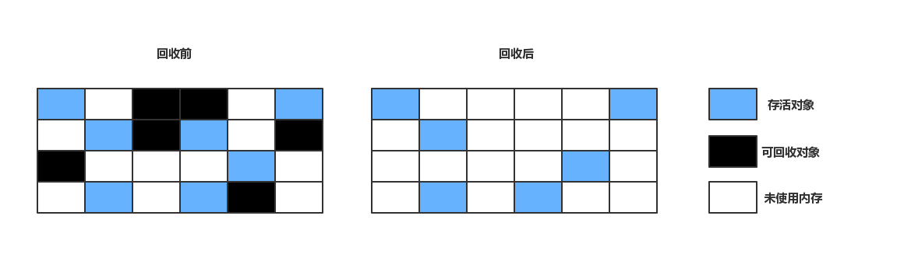
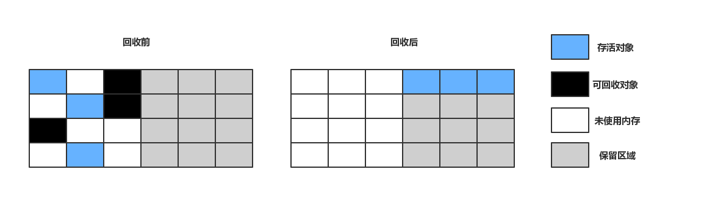
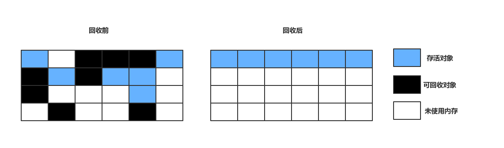

垃圾收集（Garbage Collection，下文简称GC）是JVM中非常重要的一个功能，JVM成熟的内存分配和回收机制使Java开发者无需像C++开发者那样进行手动分配和回收，更专注于具体功能上以提升开发效率。当然GC机制并非Java的产物，在Java之前，其他语言（1960 年诞生于MIT的Lisp是第一门真正使用内存动态分配和GC技术的语言）。理解GC，有助于当我们的应用发生内存溢出、内存泄漏问题时定位问题和解决问题。
上文的Java运行时数据区提到，程序计数器、虚拟机栈、本地方法栈三个区域都是线程私有的，栈帧中分配多少内存基本上在类结构确定时便是已知的，随着线程的结束，内存也跟着释放回收，不需要GC介入。而Java堆和方法区则不同，他们是线程共享的，对象创建、内存分配、内存回收都是动态进行的，也是GC所关注的内存区域。
关于GC，需要思考以下三件事：
- 那些内存需要回收？
- 何时回收？
- 如何回收？
对象存活判定
Java堆存放着几乎所有对象的实例，垃圾收集器在对堆进行回收前，首先要做的是确定这些对象中那些对象是“存活”的，那些对象已经“死去”（不可再使用）。
引用计数算法
如今的JVM中已经不再通过引用计数法判定对象是否可以回收。引用计数算法是这么实现的：对象添加一个引用计数器，每当有一个地方引用它是，计数器+1；当引用失效时，计数器-1；任何时刻计数器为0的对象就是不可能再被使用。
从实现上看，引用计数器实现简单、判定效率高，它之所以被JVM弃用，因为有个严重的问题，很难解决循环引用。如以下例子：
1 | public class ReferenceCountingGC { |
对象objA、objB互相赋值到instance属性上，除此之外，再无任何引用，实际上objA、objB都无法再被访问，但因为互相引用，导致引用计数器都不等于0，GC无法回收他们的内存，运行结果：
1 | [GC [PSYoungGen: 6138K->600K(19456K)] 6138K->600K(62976K), 0.0016832 secs] [Times: user=0.00 sys=0.00, real=0.00 secs] |
但是从结果来看600K->0K，他们确实被回收，并没有因为互相引用而不回收，这也证明了JVM不采用引用计数算法来判定对象是否存活。
可达性分析算法
在主流的JVM中，都是通过可达性分析算法（Reachability Analysis）来判定对象是否存活。该算法的基本思想是：通过一系列称为“GC Roots”的对象作为起始点，从这些节点开始向下搜索，搜索走过的路径称为引用链（Reference Chain），当一个对象到GC Roots没有任何的引用链时，即对象是不可达的。
上图中，对象object5、object6、object7虽然互有关联，但是它们到GC Roots是不可达的，所以会被判定为可回收对象。准确的说，GC Roots不是一组对象，而通常是一组特别管理的指向引用类型对象的指针，它们不会作为对象出现在上图，因此对象也不会引用到这些外部“指针”，避免了循环引用。因此得出，只有引用类型变量才被认为是GC Roots，值类型的变量永远不被认为是GC Roots。
Java中可以作为GC Roots的对象有一下几种：
- 虚拟机栈（栈帧中的本地变量表）中引用的对象
- 方法区中类静态属性引用的对象
- 方法区中常量引用的对象
- 本地方法栈中引用的对象
选择这些作为GC Roots的依据是什么？
首先GC Roots的对象必须是存活的引用类型对象，而Java堆是GC的主要管理区域，虚拟机栈、方法区和本地方法栈不受GC管理，因此这些区域内引用的对象作为GC Roots，不会被GC回收。
几种引用关系
不论是引用计数算法还是可达性分析算法，都和对象的引用有关系，在JDK1.2以前，Java的引用定义很传统：如果reference类型的数据中存储的数值代表的是另外一块内存的起始地址，就称这块内存代表着一个引用。在这种定义下，一个对象只可能有两种状态：被引用和不被引用。而实际上，还希望存在这一类状态的对象：内存足够时，可以存活在内存中，如果进行垃圾回收后还是内存不足，这些对象也可以被回收。因此JDK1.2之后，Java对引用的概念进行了扩充，将引用分为一下四种：
强引用（Strong Reference）
1
Object obj = new Object();
这类引用只要还存在，就不会被GC回收；
软引用（Soft Reference）
软引用的对象，进行GC时不会立即被回收，而是把这些对象列入回收范围进行第二次回收。如果第二次GC之后还是内存不足，则抛出内存溢出异常，可以通过SoftReference类来实现软引用
弱引用（Weak Reference）
弱引用的对象和软引用类似，但是它的强度比软引用更弱一下，弱引用对象只能活到第二次GC之前，当GC工作时，无论内存是否足够，都会回收对象，可以通过WeakReference类来实现弱引用。
虚引用（Phantom Reference）
它是四种引用中最弱的一种引用关系，虚引用不会对对象的存活产生任何影响，也无法通过虚引用来取得一个对象实例，唯一的目的就是能在这个对象被收集器回收时收到一个系统通知。可以通过PhantomReference来实现虚引用。
二次标记与拯救
即使在可达性分析算法中不可达的对象，也并不是一定会被GC回收，首先它会被第一次标记和筛选，筛选的条件是此对象是否有必要执行finalize()方法。如果对象没有覆盖finalize()方法，或者对象的finalize()已经被JVM调用过，这两种情况都视为“没有必要执行”。如果这个对象被判定为有必要执行finalize()方法，那么这个对象将会放在一个叫做F-Queue的队列中，并在Finalizer线程中去执行它（JVM会触发finalize()方法，但不会等它执行结束，之所以这样，是因为finalize()一旦执行缓慢或者死循环，都会使F-Queue中的其他对象处于长时间等待中，甚至使GC崩溃）。finalize()是对象避免被回收的最后机会，稍后GC将对F-Queue中的对象进行第二次标记。如果对象要拯救自己避免被回收，只要在finalize()方法中重新建立与GC Roots引用链上任一对象的引用关系即可，比如把自己赋值给某个变量或对象的成员变量，GC第二次标记是会将它移除待回收的集合，以下是对象自我拯救的例子：
1 | public class FinalizeEscapeGC { |
1 | finalize method executed |
第一次GC时，执行了finalize()方法，将this赋值给成员变量，成功拯救了自己，但是finalize()只会执行一次，第二次再尝试拯救自己时，失败了
回收方法区
很多人认为方法区不受GC管理，Java规范中确实规定不要求方法区实现GC，而且在方法区中进行垃圾收集的“性价比”一般比较低：在Java堆，尤其是新生代，一次GC可以回收70%~95%的空间，而永久代的GC收集效率远低于此。
永久代的GC主要回收两部分内从：废除常量和无用的类。
废弃常量
以常量池回收为例，假如字符串”abc”已经进入了常量池中，但是当前系统没有任何一个String对象是叫做”abc”的，也就是说没有任何String对象引用常量池的”abc”常量，也没有任何地方引用了这个字面量，如果此时发生GC，且必要的情况下，”abc”就会被清理出常量池。其他类、方法、字段的符号引用也类似。
无用的类
与废弃常量相比，判定一个类是否是”无用的类“，条件相对苛刻，必须同时满足以下三个条件才能算是”无用的类“
- 该类的所有实例都已经被回收，Java堆中不存在该类的任何实例；
- 加载该类的
ClassLoader已经被回收； - 类对应的
java.lang.Class对象没有在任何地方被引用，无法在任何地方通过反射访问该类的方法。
如果满足以上三个条件，JVM可以对该类进行回收，这里说的仅仅是“可以”回收，而不是和对象一样，必须回收。HotSpot提供了
-Xnoclassgc参数进行控制。
JDK1.8开始，JVM用MateSpace作为方法区的实现，MateSpace的内存管理由元空间虚拟机来完成，在MateSpace中，类和其元数据的生命周期和其对应的类加载器是相同的，只要类加载器存活，其加载的类的元数据也是存活的，不会被GC回收。
GC算法
本节介绍几种GC算法，具体的实现在后续的文章中分析。
标记-清除算法
最基础的收集算法是“标记-清除”（Mark-Sweep）算法，顾名思义，该算法分为“标记”和“清除”两个阶段：首先标记出所有要回收的对象，在标记完成后统一回收所有被标记的对象，标记的过程在上一节已经介绍过。标记-清除算法的执行过程如下图：

标记-清除算法是最基础的算法，后续的GC算法都是基于它的思路并对其不足进行改进而来的。它的不足之处主要体现在：
空间碎片
标记清除后会产生大量不连续的内存空间，碎片太多会导致以后程序在运行过程中分配大对象时，无法找到足够的连续内存而不得不触发另一次GC。
效率不高
因为存在内存碎片，查找下一个可用空闲内存不是一个简单操作，变得更耗时。
复制算法
为了解决标记-清除算法的效率问题，复制（Copying）算法出现了，它的算法思想是：将可用内存分为大小相等的两块，每次只使用其中的一块。当这一块内存用完，就将存活的对象复制到另一块上，然后再把已使用过的内存空间一次清理掉。这样每次都对整个半区进行内存回收，内存分配时也不用考虑内存碎片等复杂情况，只要移动栈顶指针，按顺序分配内存即可，实现简单，运行高效。复制算法的执行过程如下图：

复制算法的代价是可用内存为原来的一半，有点太高了。现在的商业虚拟机都采用复制算法来回收新生代。新生代的GC又叫做Minor GC，新生代中的对象98%是“朝生夕死”的，所以Minor GC很频繁，需要很高的回收速度避免性能瓶颈，同时新生代大量的对象生命周期短，也不需要按照1:1来划分内存空间。
Minor GC过程
事实上，新生代将内存划分为三个区域，Eden、From Survivor（S0）和To Survivor（S1），三个区域的比例分为为8:1:1。当Minor GC发生时：
- Eden + S0 的存活对象复制到S1上，清理Eden + S0的空间；
- S0和S1互换标签，原来的S1变成了S0，S0变成S1，第一次GC结束；
- Eden + S1的存活对象赋值到S0，清理Eden+S1的空间；
- S0和S1互换标签，第二次GC结束；
Minor GC结束的时候，Eden是空的，S0、S1有一个是空的，而另一个保存着存活对象。所以每次新生代中可用内存为整个新生代容量的90%，只有10%的空间会被浪费。
分配担保
上文提到98%的对象“朝生夕死”只是一般场景下的数据，无法保证每次GC都只有不多于10%的对象存活，当Survivor空间不足时，就要依赖老年代内存进行分配担保（Handle Promotion）。如果另一块Survivor空间没有足够空间存放上一次Minor GC之后存活的对象时，这些对象将直接通过分配担保机制进入老年代。
标记整理算法
复制收集算法在对象存活率较高时就要进行较多的复制操作，效率很低，极端情况下，所有的对象都存活，如果不想浪费50%的空间，就需要额外的空间进行分配担保，在老年代一般不能直接选用复制算法。
老年代的特点是对象存活率高，因此提出了另外一种“标记-整理”（Mark-Compact）算法，标记过程仍然与“标记-清除”算法一样，但接下来不是对可回收对象进行清理，而是让活着的对象都向一端移动，然后清理掉边界以外的内存，如下图所示：

分代收集算法
当前商业JVM的垃圾回收都采用“分代收集”（Generational Collection）算法，分代收集并不是什么新思想，只是根据对象存活周期的不同将内存划分为几块。通常划分为新生代、老年代。这样就可以根据各个年代的特点采用最适当的收集算法。
- 新生代特点：对象存活时间短，每次GC都有大量的对象被回收，只有少量存活，选用复制算法，只需付出少量存活对象的复制成本完成内存回收。
- 老年代特点：对象存活率高、没有额外空间进行分配担保，必须使用“标记-清理”或者“标记-整理”算法来进行回收。
HotSpot的算法实现
前文介绍了对象存活判定算法和垃圾收集算法，而在HotSpot虚拟机上实现这些算法，必须对算法的执行效率有严格的考量，才能保证虚拟机高效运行。
枚举根节点
从可达性分析中从GC Roots节点找引用链这个操作为例，可作为GC Roots的节点主要在全局性的引用（例如常量或类静态属性）与执行上下文（例如栈帧中的局部变量表）中，现在很多应用仅仅方法区就有数百兆，如果要逐个检查这里面的引用，那么必然会消耗很多时间。
GC停顿
可达性分析必须工作在一个能确保一致性的快照中进行——这里“一致性”的意思是指在整个分析期间，系统就像停顿在一个时间点上，不能出现分析过程中对象引用关系还在不断变化的情况，否则分析结果的准确性就无法得到保证。这是导致GC时必须停顿所有线程的主要原因，Sun将这一停顿称作“Stop The World”。即使在号称（几乎）不会发生停顿的CMS收集器中，枚举根节点时也是必须停顿的。
OopMap
目前主流的JVM都采用准确式GC（即使用准确式内存管理，JVM可以知道内存中某个位置的数据具体是什么类型，另一种GC方式，是保守式GC），所以当执行系统停顿下来后，并不需要一个不漏地检查完所有执行上下文和全局的引用位置，虚拟机应当是有办法直接得知哪些地方存放着对象引用。在HotSpot实现中，是使用一组称为OopMap的数据结构来达到此目的。在类加载完成时，HotSpot就把对象内什么偏移量上是什么类型的数据计算出来，在JIT编译过程中，也会在特定的位置记录下栈和寄存器中的哪些位置是引用的。这样，GC扫描时就可以直接得知这些信息了。
安全点
OopMap可以协助HotSpot快速准确的完成GC Roots枚举，但一个很现实的问题：可能导致引用关系变化，或者说OopMap内容变化的指令非常多，如果每条指令都生成OopMap，非常浪费空间，GC成本也会随之升高。
Hotspot确实没有为每条指令生成OopMap，只是在“特定的位置”记录了这些信息，这些位置称为安全点（Safepoint）,线程执行时并非随时停下开始GC，而是达到安全点时才能暂停。关于安全点，就是如何要让线程在GC发生时都跑到最近的安全点上再停顿，通常有两种方案：
- 抢先式中断（Preemptive Suspension），不需要线程主动配合，在GC发生时，首先把所有线程全部中断，如果发现有线程中断的地方不在安全点上，就恢复线程，让线程继续跑到安全点上。现在几乎没有虚拟机采用这种方式来中断线程响应GC。
- 主动式中断（Voluntary Suspension），当GC需要中断线程的时候，不直接对线程操作，仅仅简单地设置一个标识，各个线程执行时主动去轮询这个标识，发现中断标识为真时就轮询挂起，中断标识一般和安全点是重合的。
安全点该如何选择呢？太多，GC过于频繁，太少，GC等待时间太长。一般会在以下几个位置选择安全点：
- 循环的结束位置；
- 方法返回前；
- 调用方法之后；
- 抛异常的位置；
选择以上位置作为安全点的原因在于，避免线程长时间无法跑到安全点，如果GC时有一个线程未到达安全点，就会导致GC停顿时间延长。
安全区域
安全点解决了线程在运行时如何进入GC的问题，但是线程可能处于Sleep或者Blocked状态，此时无法响应JVM的中断请求，跑到安全点附近，JVM也不可能等待线程被重新分配CPU时间，基于以上情况，就需要安全区域（Safe Region）来解决。
安全区域是指在一段代码片段中，引用关系不会发生变化，也就不用更新OopMap表，在这个区域中的任意地方开始GC都是安全的，可以把安全区域看做是被扩展了的安全点。线程执行过程中，如果进入到安全区域内，就会标识自己已经进入了安全区域，JVM要发起GC时，就不会管这个线程了。一旦线程要离开安全区域时，它要检查系统是否已经完成了根节点枚举（或者是整个GC过程），如果已完成，线程继续执行，否则只能等待可以安全离开安全区域的信号为止。